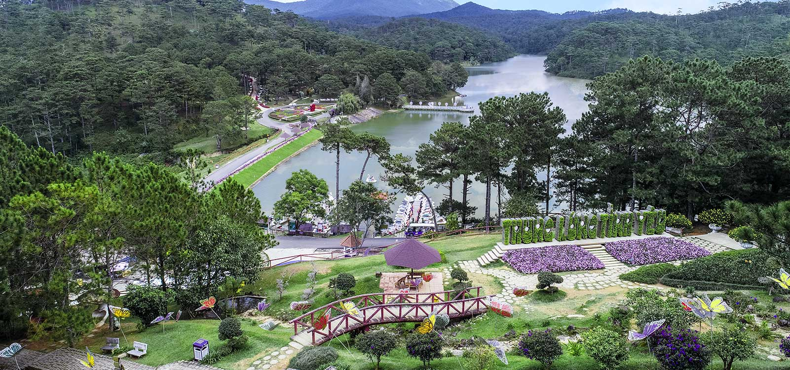
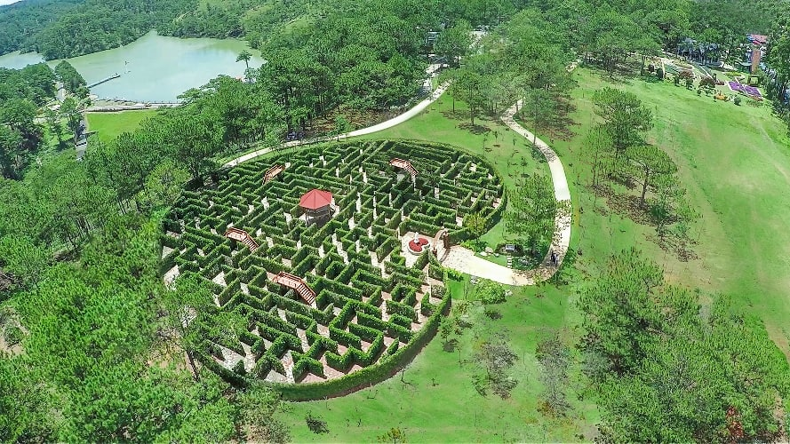
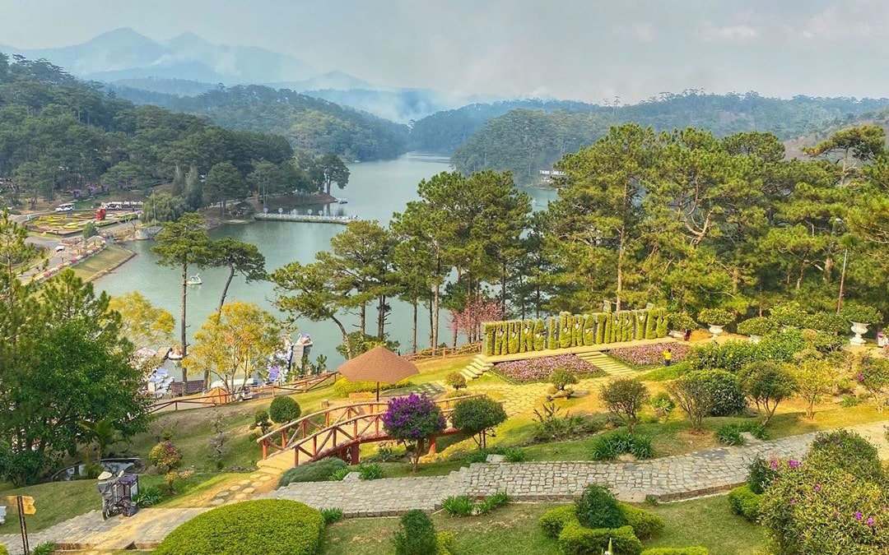

Thung lũng Tình Yêu là một trong những địa danh nổi tiếng và được yêu thích nhất tại thành phố Đà Lạt, tỉnh Lâm Đồng. Nằm cách trung tâm thành phố khoảng 5 km về phía Đông Bắc, nơi đây không chỉ thu hút bởi vẻ đẹp thơ mộng, lãng mạn mà còn bởi lịch sử lâu đời và những câu chuyện tình yêu ngọt ngào gắn liền với địa danh này. Với không khí trong lành, khung cảnh nên thơ và nhiều hoạt động hấp dẫn, Thung lũng Tình Yêu là điểm dừng chân lý tưởng cho cả những cặp đôi và du khách yêu thiên nhiên.
Thung lũng Tình Yêu nằm trên đường Mai Anh Đào, phường 8, thành phố Đà Lạt, bao quanh bởi những dãy đồi thông xanh bạt ngàn và những con suối nhỏ róc rách. Địa danh này được người Pháp phát hiện và đưa vào khai thác từ những năm đầu thế kỷ 20, với tên gọi "Vallée d’Amour," nghĩa là "Thung lũng Tình Yêu" trong tiếng Pháp. Cái tên này phản ánh vẻ đẹp thơ mộng, quyến rũ của cảnh quan nơi đây.

Vào năm 1953, cái tên "Thung lũng Tình Yêu" chính thức được đặt bởi vua Bảo Đại – vị hoàng đế cuối cùng của triều đại phong kiến Việt Nam. Từ đó, nơi đây trở thành điểm hẹn hò, gắn kết tình cảm của không chỉ các đôi lứa yêu nhau mà còn là biểu tượng lãng mạn đặc trưng của Đà Lạt.
Thung lũng Tình Yêu nổi bật với không gian thiên nhiên đẹp như tranh vẽ. Nằm lọt thỏm giữa những dãy đồi trập trùng và rừng thông xanh rì, nơi đây mang đến một không gian yên bình, trong lành và thoáng đãng. Bên trong thung lũng là hồ Đa Thiện – một hồ nước nhân tạo được bao quanh bởi những con đường lát đá, cầu gỗ, và các bãi cỏ xanh mướt.

Những thảm hoa tươi tắn với đủ loại màu sắc được chăm chút kỹ lưỡng quanh năm, tạo nên một bức tranh thiên nhiên đầy sống động. Mỗi mùa, Thung lũng Tình Yêu lại mang một vẻ đẹp riêng biệt: từ sắc hoa anh đào ngọt ngào vào mùa xuân, đến sắc vàng rực rỡ của hoa dã quỳ vào mùa thu. Tất cả hòa quyện với không gian mát mẻ, sương mù bảng lảng của cao nguyên Đà Lạt, tạo nên một vẻ đẹp vừa lãng mạn vừa kỳ ảo.